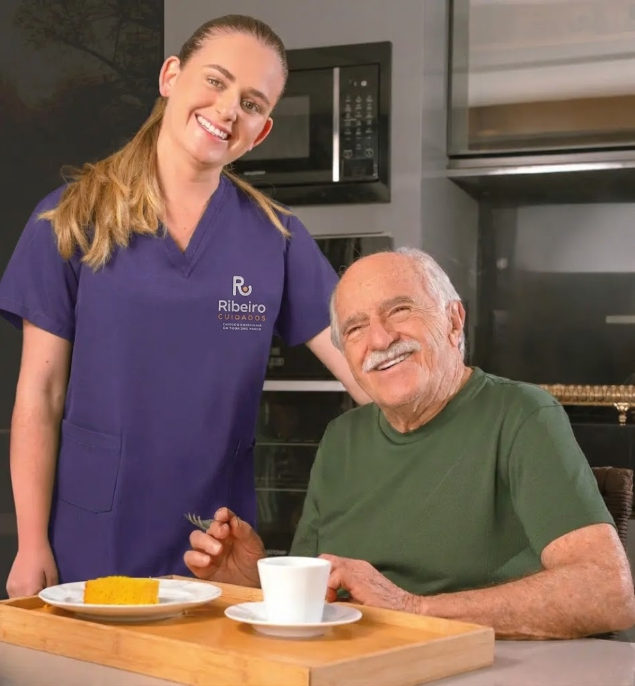
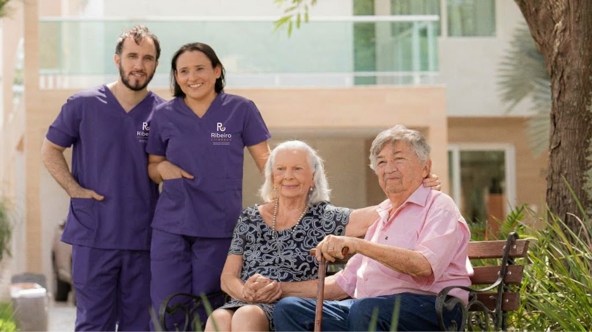
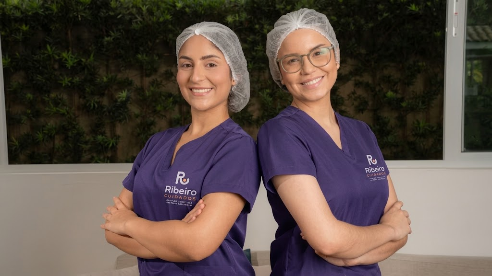

A Ribeiro Cuidados reúne profissionais credenciados e equipamentos de apoio e coordena tudo para a sua família.
Profissionais da sua região, com um único contato.

Quem cuida de você
Profissionais selecionados e credenciados, com documentação e referências verificadas.

NASCEMOS NA ZONA LESTE
A Ribeiro Cuidados nasceu na Zona Leste de São Paulo para facilitar o que é difícil: encontrar cuidado de confiança, perto de casa, sem a família precisar se virar sozinha.
Um único contato: você fala com a gente e nós coordenamos todo o cuidado.
Perto de você: profissionais credenciados da sua região, em toda São Paulo, sob consulta.
Sabemos como é difícil encontrar profissionais de confiança e gerenciar tudo sozinho.
Cuidador, enfermagem, fisioterapia, equipamento: são muitas decisões ao mesmo tempo, quase sempre com pressa.
Indicação de conhecido nem sempre basta. Falta saber se documentos e referências estão em dia.
Achar alguém da sua região, no horário certo, toma um tempo que a família não tem.
Selecionamos, credenciamos e indicamos profissionais da sua região e coordenamos o cuidado junto com a sua família.
Documentação pessoal e profissional em dia e referências conferidas antes de qualquer indicação.
O plano nasce da rotina e das necessidades de quem vai ser cuidado e muda quando a situação muda.
Acompanhamos o início do atendimento e ajustamos o que for preciso.
Um único contato
Você fala com a gente e nós coordenamos profissionais e equipamentos.
Para idosos, pós-operatório e reabilitação, doenças crônicas, mobilidade reduzida e famílias que precisam de apoio contínuo.
Companhia e apoio no banho, na alimentação e na rotina, com foco na autonomia e no bem-estar.
Fale conosco via WhatsApp ›Técnicos e auxiliares de enfermagem, fisioterapia, fonoaudiologia e nutrição, com profissionais habilitados.
Fale conosco via WhatsApp ›
Locação e venda de cama hospitalar, cadeira de rodas e concentrador de oxigênio, junto com o plano de cuidados.
Fale conosco via WhatsApp ›O que a sua família pode esperar da Ribeiro Cuidados
Antes de qualquer indicação, conferimos a documentação pessoal e profissional, o registro no conselho quando aplicável e as referências de cada profissional.
Ribeiro Cuidados
Nosso compromisso
Você fala com a Ribeiro Cuidados e nós organizamos profissionais e horários. A família não precisa coordenar tudo sozinha.
Ribeiro Cuidados
Nosso compromisso
O plano de cuidados nasce da rotina e das necessidades de quem vai ser cuidado e é ajustado sempre que a situação mudar.
Ribeiro Cuidados
Nosso compromisso
Cama hospitalar, cadeira de rodas e concentrador de oxigênio, para locação ou venda, organizados junto com o atendimento.
Ribeiro Cuidados
Nosso compromisso
Quatro passos simples, com a gente ao seu lado.
Pelo WhatsApp: cidade, bairro e a necessidade de quem vai ser cuidado.
Definimos com você o plano de cuidados: tipo de profissional e horários.
Profissionais credenciados da sua região, com documentação e referências verificadas.
Acompanhamos o início e ajustamos o que for preciso.
Toda São Paulo, com profissionais da sua região. A disponibilidade é confirmada sob consulta.
Conforme o plano de cuidados: tipo de profissional, horários e duração. O valor é sob consulta.
Não. A Ribeiro Cuidados seleciona, credencia, indica e coordena os profissionais. Explicamos como funciona a contratação antes do início.
Não. Medicação injetável, curativos e sondas exigem profissional de enfermagem habilitado. Nesses casos, indicamos técnicos ou auxiliares de enfermagem.
Sim. Cama hospitalar, cadeira de rodas e concentrador de oxigênio, para locação ou venda, junto com o atendimento. Disponibilidade e valores sob consulta.
O plano de cuidados é montado conforme a necessidade: por período, fins de semana ou acompanhamento contínuo. Fale com a gente para ver as opções.
Acompanhamos o início e ajustamos o que for preciso. Você continua com um único contato para tudo.
Cuidador, técnico de enfermagem, fisioterapeuta, fonoaudiólogo ou nutricionista? Cadastre-se pelo botão “Seja da equipe” e receba indicações da sua região. Pedimos documentação pessoal e profissional em dia (registro no conselho quando aplicável), referências e disponibilidade.